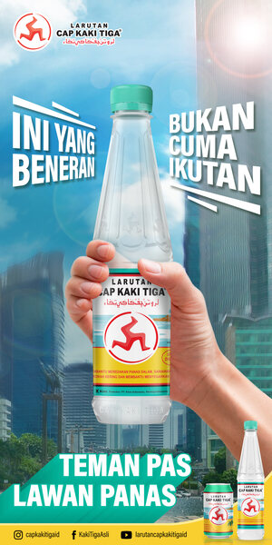
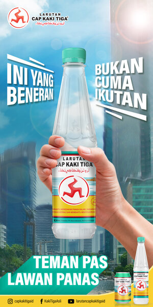

Struktur
Pendahuluan
Kolonialisme adalah pengembangan kekuasaan sebuah negara atas wilayah dan manusia di luar batas negaranya. Sering kali, kolonialisme bertujuan untuk mencari dominasi ekonomi dari sumber daya, tenaga kerja, dan pasar wilayah tersebut. Pada dasarnya, konsep kolonialisme berkaitan dengan imperialisme. Artinya, keduanya merupakan kebijakan atau etos penggunaan kekuasaan untuk menguasai bangsa dan rakyat di negara lain. Sementara dari segi etimologi, kolonialisme berasal dari kata colonus yang berarti menguasai. Sederhananya, kolonialisme merupakan upaya suatu negara untuk menguasai suatu wilayah di luar negaranya sendiri.
Tujuan Kolonialisme
Dari pengertiannya, kolonialisme memiliki tujuan untuk menguasai suatu wilayah tertentu. Secara spesifik, negara yang melakukan kolonialisme bertujuan untuk mendominasi kekuasaan dari berbagai sektor, termasuk politik, ekonomi, penduduk, hingga sumber daya alam. Negara yang melakukan kolonialisme umumnya tidak memiliki kekayaan bumi yang ada di negara jajahannya. Oleh sebab itu, mereka berupaya untuk mengambil alih sumber daya tersebut. Terjadinya kolonialisme juga mendapat dukungan militer yang kuat.
Perkembangan Kolonialisme
Masa kolonialisme identik dengan penjajahan dan eksploitasi sumber daya manusia maupun sumber daya alam. Bangsa Indonesia mengalami masa tersebut berabad-abad tahun lamanya. Rentang waktu yang lama tersebut diwarnai dengan berbagai peristiwa dan pergolakan baik dari segi sosial, politik, ekonomi, maupun agama. Praktik kolonialisme sudah terjadi di zaman kuno yakni oleh kerajaan Yunani Kuno, Mesir Kuno, dan Fenisia. Mereka berupaya memperluas wilayah perbatasan dan membangun negara koloni untuk memanfaatkan sumber daya manusia maupun alam demi keuntungan dan kekuatan sendiri. Pada abad ke-15, kolonialisme modern berkembang ketika Portugal mulai mencari jalur perdagangan dan mencari peradaban di luar Eropa. Portugal berhasil menaklukkan Ceuta pada 1415, sebuah kota di Afrika Utara. Kemudian di tahun 1492, Christopher Columbus mencari rute barat ke India dan Cina. Namun ia mendarat di Bahama dan menggusur Kekaisaran Spanyol. Spanyol dan Portugal terkunci dalam persaingan untuk wilayah baru, kemudian mengambil alih tanah adat di Amerika, India, Afrika, dan Asia. Negara-negara seperti Inggris, Belanda, Prancis, dan Jerman bangkit dan mulai merebut wilayah yang sudah ditaklukkan Spanyol dan Portugis. Di tahun 1914, sebagian besar dunia telah dijajah oleh orang-orang Eropa.
Contoh Kolonialisme
Kolonialisme umumnya dilakukan oleh negara-negara yang memiliki kekuatan lebih dibandingkan negara lain. Contohnya, Indonesia dengan berbagai kelimpahan sumber daya alamnya menarik Belanda dan Jepang untuk menduduki wilayah Indonesia sebelum merdeka. Contoh lainnya adalah Spanyol yang menguasai wilayah Filipina dan Kolombia, dan Inggris yang menguasai wilayah India dan Semenanjung Malaya.
Sumber : cnnindonesia.com
 
